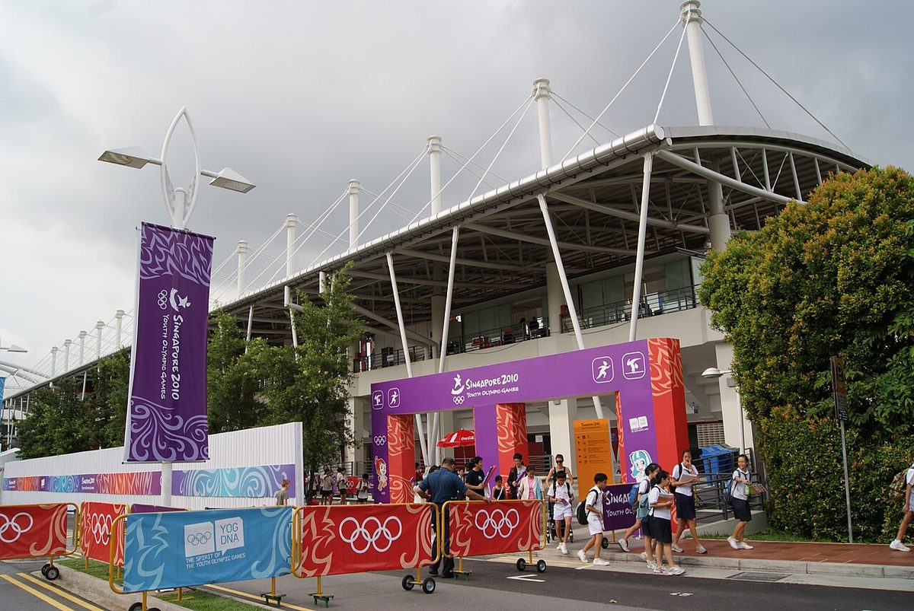

Bangladesh and Singapore finalize preparations ahead of December women's friendlies
Interim coach Eric Mare leads Dhaka camp while Lionesses name Umairah Hamdan captain for two-match series

The Bangladesh women's national football team began the final phase of their preparations in Dhaka on Sunday, 22 November 2026, ahead of a two-match international friendly series away against Singapore.
French coach Eric Mare, appointed by the Bangladesh Football Federation on a one-month contract while permanent head coach Peter Butler receives medical treatment in England, directed Sunday's session at the National Stadium. The squad had returned to Dhaka on 20 November after completing a three-week residential camp that began on 31 October at the Korean Export Processing Zone in Anwara, Chattogram. The camp featured veteran midfielders Maria Manda and Ritu Porna Chakma, defender Afida Khandaker, and 17-year-old Australian-born trialist Tazara Khan.
Ishida hands armband to Umairah

Singapore head coach Mihoko Ishida finalized a 28-player roster on 20 November, appointing 24-year-old Lion City Sailors defender Umairah Hamdan as captain. Umairah, who holds 36 international caps, led Singapore at the AFF Women's Cup in July, where a third-place finish secured qualification for the 2027 ASEAN Women's Championship.
"At the AFF Women's Cup, she always communicated the team's ideas clearly and played a very important role for us," Ishida said of Umairah. The Lionesses squad features uncapped overseas prospects including So Cal Blues defender Kylie Loo and IMG Academy midfielder Aria Romano, alongside recalls for forward Lila Tan and midfielder Raudhah Kamis. Singapore midfielder Putri Syaliza also returned to the national setup after receiving medical clearance ahead of her pending move to Australian club West Torrens Birkalla.
Head-to-head record and schedule
Bangladesh occupy 106th place in the FIFA Women's World Ranking, while Singapore sit 151st. Bangladesh have won all three previous meetings between the nations without conceding a goal. In their first meeting in 2017, Bangladesh won 2-0 in Singapore. The sides met again in Dhaka in December 2023, where Bangladesh recorded 3-0 and 8-0 victories.
Bangladesh will depart Dhaka for Singapore on 29 November. The first friendly takes place behind closed doors at Bishan Stadium on Tuesday, 1 December. The second encounter will follow on Saturday, 5 December at Jalan Besar Stadium in front of spectators, with both games kicking off at 7:30 pm local time and counting toward the FIFA rankings. For Singapore, the matches serve as preparation for the 2027 ASEAN Women's Championship in April and the 34th Southeast Asian Games in Malaysia in September 2027.